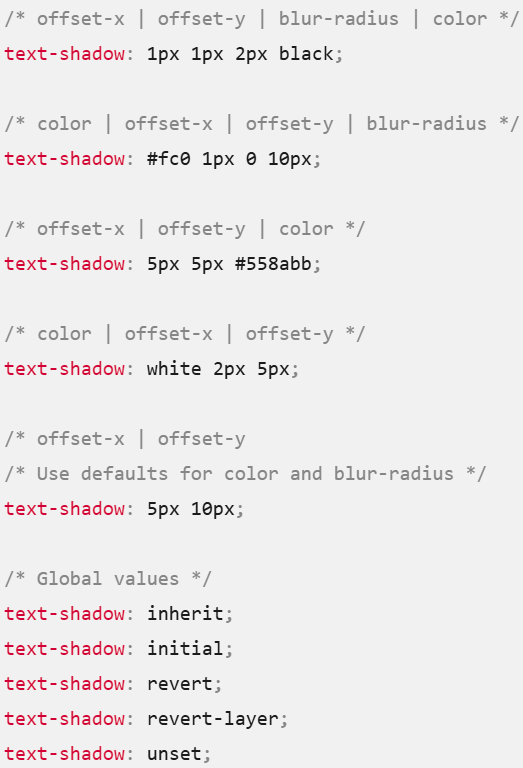
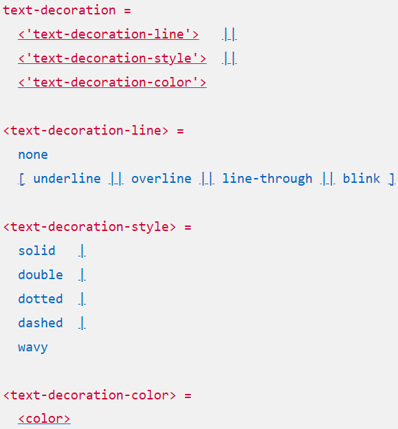
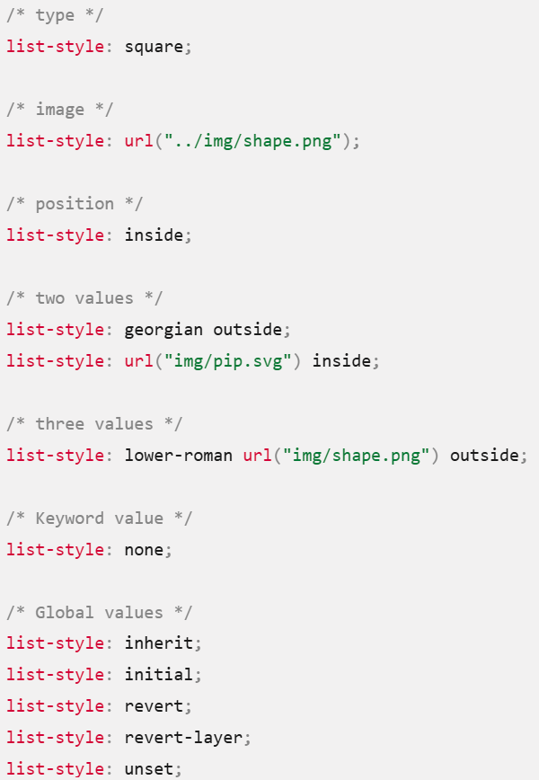
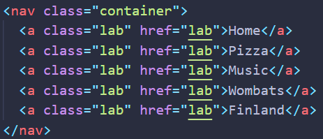
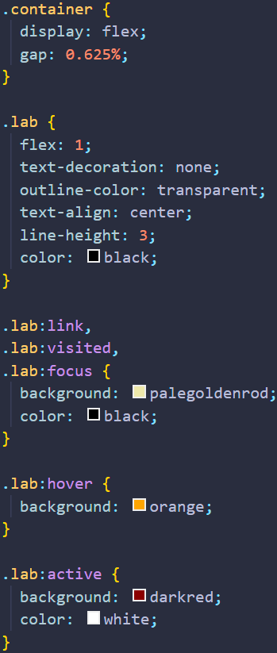

The font-family CSS property specifies a prioritized list of one or more font family names and/or generic family names for the selected element.
The browser starts at the beginning of the list and looks to see if that font is available on the machine. If it is, it applies that font to the selected elements. If not, it moves on to the next font, and so on.
It is a good idea to provide a suitable generic font name at the end of the stack so that if none of the listed fonts are available, the browser can at least provide something approximately suitable. To emphasize this point, paragraphs are given the browser's default serif font if no other option is available — which is usually Times New Roman — this is no good for a sans-serif font!
The font-size CSS property sets the size of the font. Changing the font size also updates the sizes of the font size-relative

The font-weight CSS property sets the weight (or boldness) of the font. The weights available depend on the font-family that is currently set.

The numerical values 100 to 900 roughly correspond to the following common weight names.

The font-style CSS property sets whether a font should be styled with a normal, italic, or oblique face from its font-family.

normal Selects a font that is classified as normal within a font-family.
italic Selects a font that is classified as italic. If no italic version of the face is available, one classified as oblique is used instead. If neither is available, the style is artificially simulated.
oblique Selects a font that is classified as oblique. If no oblique version of the face is available, one classified as italic is used instead. If neither is available, the style is artificially simulated.
oblique
The text-align CSS property sets the horizontal alignment of the inline-level content inside a block element or table-cell box.

The letter-spacing CSS property sets the horizontal spacing behavior between text characters. This value is added to the natural spacing between characters while rendering the text. Positive values of letter-spacing causes characters to spread farther apart, while negative values of letter-spacing bring characters closer together.


The line-height CSS property sets the height of a line box in horizontal writing modes. In vertical writing modes, it sets the width of a line box. It's commonly used to set the distance between lines of text. On block-level elements in horizontal writing modes, it specifies the preferred height of line boxes within the element, and on non-replaced inline elements, it specifies the height that is used to calculate line box height.

normal - Depends on the user agent. Desktop browsers (including Firefox) use a default value of roughly 1.2, depending on the element's font-family.
number - (unitless) The used value is this unitless number multiplied by the element's own font size. The computed value is the same as the specified number. In most cases, this is the preferred way to set line-height and avoid unexpected results due to inheritance.
length - The specified length is used in the calculation of the line box height. Values given in em units may produce unexpected results (see example below).
percentage - Relative to the font size of the element itself. The computed value is this percentage multiplied by the element's computed font size. Percentage values may produce unexpected results.
Take me to Google Fonts
Which will look something like this:

The text-shadow CSS property adds shadows to text. It accepts a comma-separated list of shadows to be applied to the text and any of its decorations. Each shadow is described by some combination of X and Y offsets from the element, blur radius, and color.
offset-x offset-y Required. These length values specify the shadow's distance from the text. offset-x specifies the horizontal distance; a negative value places the shadow to the left of the text. offset-y specifies the vertical distance; a negative value places the shadow above the text. If both values are 0, the shadow is placed directly behind the text, although it may be partly visible due to the effect of blur-radius.
blur-radius Optional. This is a length value. The higher the value, the bigger the blur; the shadow becomes wider and lighter. If not specified, it defaults to 0.
color Optional. The color of the shadow. It can be specified either before or after the offset values. If unspecified, the color's value is left up to the user agent, so when consistency across browsers is desired you should define it explicitly.
The text-transform CSS property specifies how to capitalize an element's text. It can be used to make text appear in all-uppercase or all-lowercase, or with each word capitalized. It also can help improve legibility for ruby.

uppercase Is a keyword that converts all characters to uppercase.
lowercase Is a keyword that converts all characters to lowercase.
none Is a keyword that prevents the case of all characters from being changed.
full-width Is a keyword that forces the writing of a character — mainly ideograms and Latin scripts — inside a square, allowing them to be aligned in the usual East Asian scripts (like Chinese or Japanese).
full-size-kana Generally used for ruby annotation text, the keyword converts all small Kana characters to the equivalent full-size Kana, to compensate for legibility issues at the small font sizes typically used in ruby.
math-auto Used to automatically render text in math italic where appropriate. It transforms Latin and Greek letters, and a few other math-related symbols, to italic mathematical symbols but only if it's applied on a text node containing a single character. For example, "x" will become "𝑥" (U+1D465), but "exp" will stay as "exp". It is primarily used to specify the behavior of mi elements in MathML. You should generally use MathML markup which automatically applies the right styling.
The text-decoration shorthand CSS property sets the appearance of decorative lines on text. It is a shorthand for text-decoration-line, text-decoration-color, text-decoration-style, and the newer text-decoration-thickness property.
text-decoration-thickness: 10px;
text-decoration-line Sets the kind of decoration used, such as underline or line-through.
text-decoration-color Sets the color of the decoration.
text-decoration-style Sets the style of the line used for the decoration, such as solid, wavy, or dashed.
text-decoration-thickness Sets the thickness of the line used for the decoration.
The list-style CSS shorthand property allows you to set all the list style properties at once.
The values of this property are applied to list items, including li elements and elements with display: list-item;. Because this property is inherited, it can be set on a parent element (normally ol or ul) to make the same list styling apply to all the nested items.
list-style-type A counter-style, string, or none. If omitted in the shorthand, the default disc value is used. See list-style-type.
list-style-image An image or none. If omitted, the default none value is used. See list-style-image.
list-style-position Either inside or outside. If omitted, the default outside value is used. See list-style-position.
none No list style is used.
When styling links, it is important to understand why default link styles are important, how to use pseudo-classes to style link states effectively, and how to style links for use in common varied interface features such as navigation menus and tabs.
link: A link that has a destination (i.e., not just a named anchor), styled using the :link pseudo class.
visited: A link that has already been visited (exists in the browser's history), styled using the :visited pseudo class.
hover: A link that is hovered over by a user's mouse pointer, styled using the :hover pseudo class.
focus: A link that is focused (e.g., moved to by a keyboard user using the Tab key or something similar, or programmatically focused using HTMLElement.focus()) %E2%80%94 this is styled using the :focus pseudo class.
active: A link that is activated (e.g., clicked on), styled using the :active pseudo class.
In addition, links are quite commonly styled to look and behave like buttons in certain circumstances. A website navigation menu can be marked up as a set of links, and this can be styled to look like a set of control buttons or tabs that provide the user with access to other parts of the site.
HTML
CSS
The HTML defines a nav element with a "container" class. The nav contains our links.
The CSS includes the styling for the container and the links it contains.
The cursor CSS property sets the mouse cursor, if any, to show when the mouse pointer is over an element.
The cursor setting should inform users of the mouse operations that can be performed at the current location, including: text selection, activating help or context menus, copying content, resizing tables, and so on. You can specify either the type of cursor using a keyword, or load a specific icon to use (with optional fallback images and mandatory keyword as a final fallback).
A link to mdn cursor